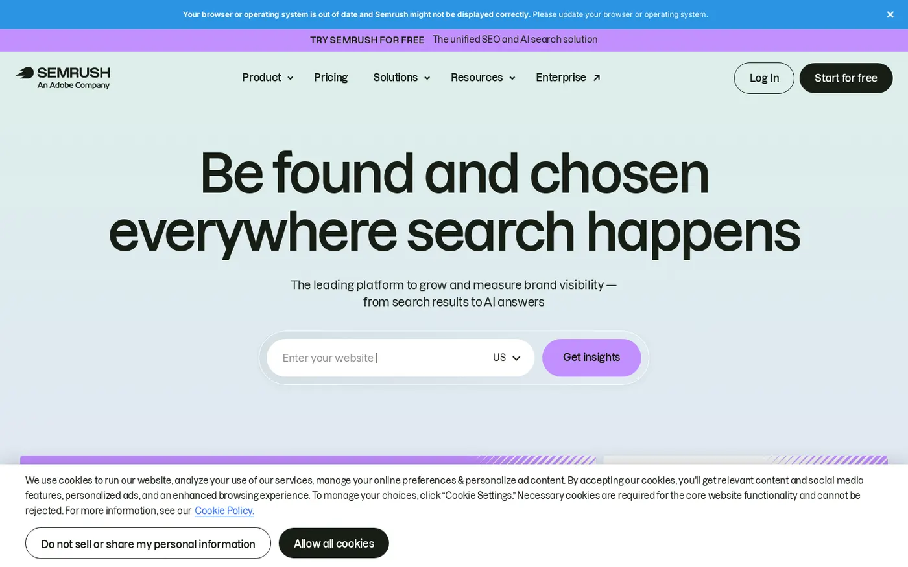
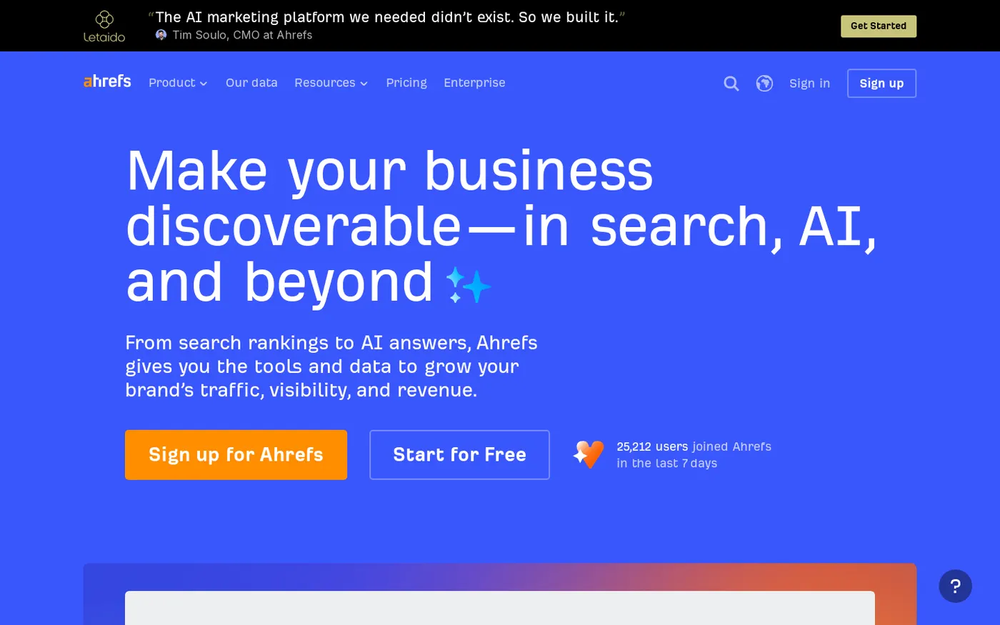
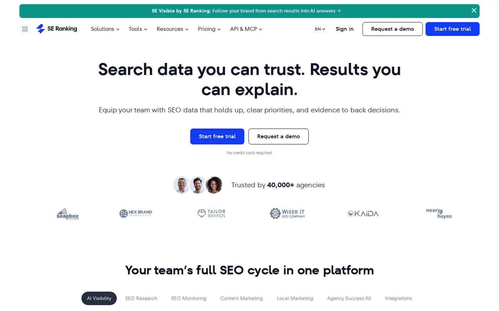
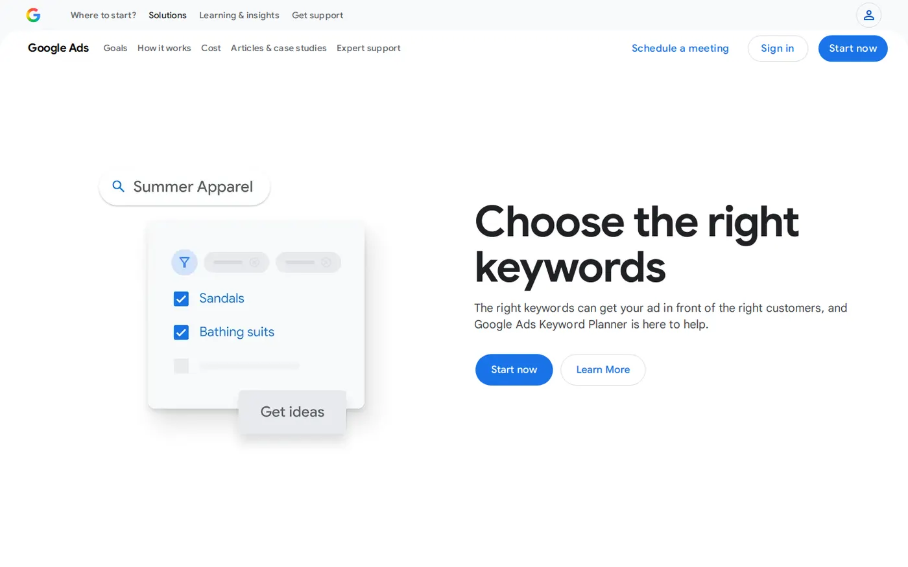
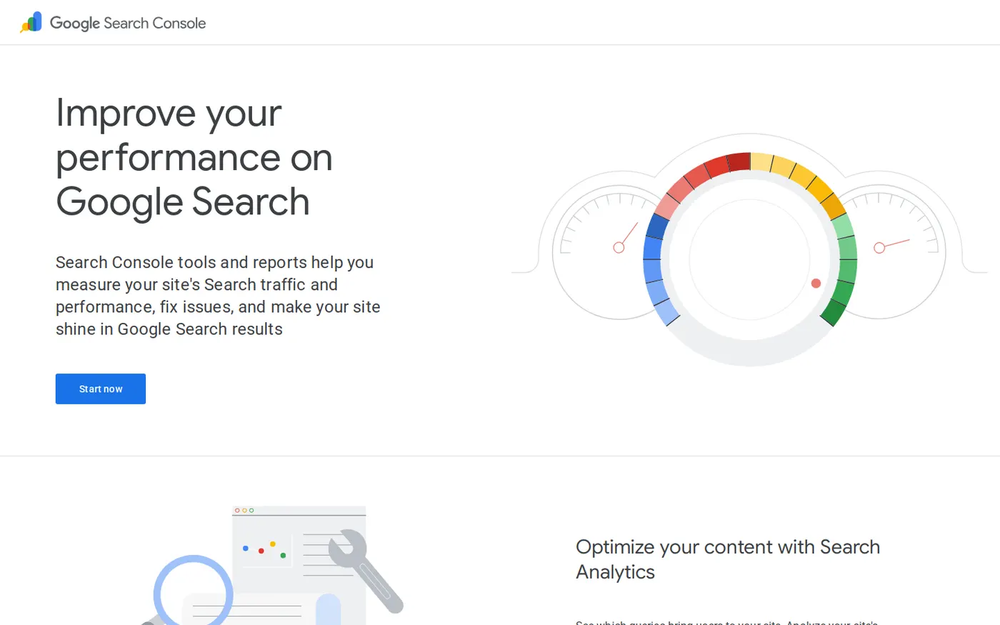
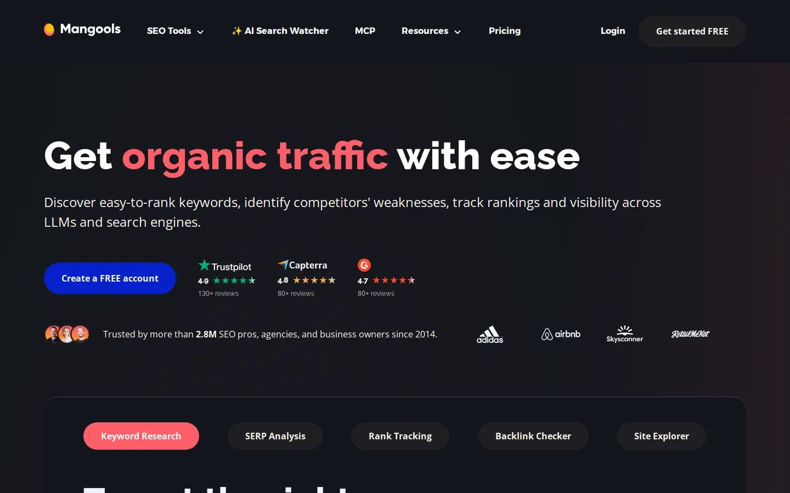
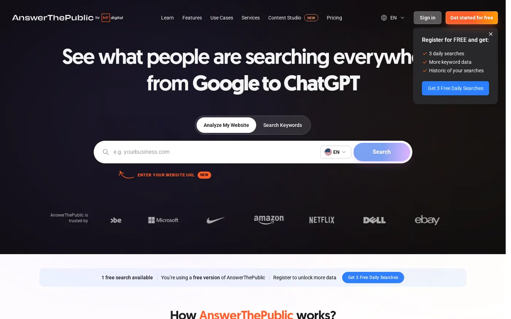

On this page
The best keyword research tools for most SaaS teams in 2026 are Semrush or Ahrefs for full keyword data, plus Google Keyword Planner and Google Search Console, which are free. SE Ranking, Mangools and AnswerThePublic cost less and do narrower jobs. The tools now differ most on a newer question: do they show what people ask AI engines, or only what they type into Google?
This post compares 8 tools on data sources, AI search data and cost. Every fact comes from the vendor's own website, checked on 13 November 2026.
I work at Fourward, which publishes this guide. One entry is ours: the free AI visibility check, listed last. I also use Ahrefs in my work, so read that entry with this in mind. Every other fact comes from that company's own website, checked on 13 November 2026. No vendor paid to be included.
- A keyword research tool is software that shows what people search for, roughly how often and how hard each term is to rank for.
- No two tools report the same numbers. Each one builds its own keyword database, so compare keywords inside one tool and check the winners against Search Console.
- AI search data comes in two kinds: a vendor's prompt database (Ahrefs says 558 million+) or prompts you choose and track (SE Ranking from $71 a month).
- Paid entry prices run from US$20 a month (AnswerThePublic) and $29 (Ahrefs Starter) to $139 billed monthly (Semrush's SEO plan). Google's two tools cost nothing.
What a keyword research tool does
A keyword is the word or phrase a person types into a search engine, such as "payroll software for startups". A keyword research tool collects millions of these and adds numbers to each one.
Most tools report the same handful of things:
- Search volumeAbout how many times a month people search for the keyword.
- Keyword difficultyA score for how hard it would be to reach the first page of Google for that keyword.
- Search intentThe reason behind the search: to learn something, to compare options or to buy.
- Keyword ideasRelated searches, longer phrases and questions you might not have thought of.
- AI search dataNewer tools also show the prompts people ask AI engines, or whether a keyword triggers Google's AI Overviews. A prompt is the question a person types into an AI tool such as ChatGPT.
For a SaaS team, intent matters more than volume. A small keyword from someone ready to buy is worth more than a big one from a student.
Why keyword tools show different numbers
If you check one keyword in three tools, you will often see three different volumes. That is normal, because each tool gets its data a different way.
Google's own tools
Google built Keyword Planner for advertisers. Google says it shows what people are searching for and how many times a month. Search Console is different again: it shows real clicks and impressions for your own site. An impression is one time your page appeared in someone's search results.
Paid tools' own databases
Semrush and Ahrefs each build their own keyword databases. Semrush says it has over 28 billion keywords across 142 geographic databases. Ahrefs says its database holds billions of keywords and uses 12-month average volume forecasts. A 12-month average smooths out seasonal peaks, so a keyword that peaks in one month looks smaller in that month than it really is.
Question mining
AnswerThePublic works from one seed keyword and returns the questions, comparisons and related searches around it. AnswerThePublic is built for ideas, not for exact counts.
Pick one paid tool and compare keywords inside it. Then check your shortlist against Search Console, which shows what real searches did on your site.
How I picked them
I started from the tools SaaS teams name most often when they look for keyword research software. I kept the ones with a public pricing or product page. On each company's own site, I checked three things: where its keyword data comes from, what AI search data it shows and its entry price.
I use Ahrefs in my work. I did not sign up for the other tools or run paid tests, so nothing here claims hands-on results. Moz Pro is a well-known option, but its pricing page would not load when I checked, so it is not in this list.
The best keyword research tools at a glance
The same four questions for every tool. Scroll the table sideways on a phone.
| Tool | Best for | Starts at | AI search data |
|---|---|---|---|
| Semrush | One suite for keywords, rankings and AI Overviews | $117.33/mo billed annually, or a free plan | Daily AI Overviews tracking; AI search plans from Starter |
| Ahrefs | Deep keyword data plus AI prompt research | $29/mo (Starter) | Brand Radar AI, 558 million+ prompts |
| SE Ranking | An SEO suite with lower-cost AI tracking | $103.20/mo as shown (Core) | AI visibility from $71/mo, 75 prompts |
| Google Keyword Planner | Free keyword ideas from Google | Free, with a Google Ads account | None listed |
| Google Search Console | Your own real search queries | Free | Generative AI performance reports |
| Mangools | Beginners who want a simple tool | Free account; paid price not confirmed | AI Search Watcher from $34.90/mo, annual |
| AnswerThePublic | Questions and comparisons around a topic | US$20/mo (Starter) | None listed |
| Fourward AI visibility check | Checking whether AI engines can read your site | Free | 30 checks on what AI engines can read |
1. Semrush
Best for SaaS teams that want keyword research, rank tracking and AI Overviews data in one suite.

Semrush is an SEO suite built around a very large keyword database. Its Keyword Magic Tool helps you find long-tail terms, which are longer and more specific searches, and understand the intent behind them.
Semrush now sells its plans in two groups: SEO only, and SEO plus AI search. Semrush's rank tracking follows your keywords every day across Google and AI Overviews, the AI summaries at the top of some Google results.
- Keyword dataOver 28 billion keywords across 142 geographic databases, which Semrush calls one of the largest on the market.
- AI search dataDaily keyword tracking in AI Overviews. The SEO plus AI search plans start with Starter, shown at $165.17 a month on the page's default annual billing. Pricing page
- PricingThe SEO plan covers basic keyword research and competitor analysis for $117.33 a month billed annually, or $139 billed monthly.
- Free optionA free plan with 10 reports per day, and a seven-day free trial of paid plans.
My take Semrush is the safest pick when one person owns SEO and wants every report in one place. Budget for Starter if AI search data matters, because the SEO plan covers keyword basics.
2. Ahrefs
Best for Teams that want deep keyword data and the largest published database of AI prompts in this list.

Ahrefs runs its keyword research through Keywords Explorer, which draws on a database of billions of keywords. Ahrefs also uses AI to analyse the search results page and show the real intent behind a keyword.
For AI search, Ahrefs sells Brand Radar AI. Ahrefs says it lets you research any brand across 558 million+ organic prompts and track your own AI prompts as well.
- Keyword dataBillions of keywords, 12-month average search volume forecasts and AI analysis of search intent.
- AI search dataBrand Radar AI, listed with the add-ons on the pricing page, covers 558 million+ prompts.
- PricingStarter is $29 a month and renews monthly only. Lite is $129 a month and Standard is $249. Ahrefs pricing guide
- Who it suitsContent and SEO leads who research many keywords each week and want to study competitors' AI visibility too.
My take Starter at $29 is the cheapest paid plan from a full SEO suite in this list. Brand Radar AI is the only prompt database here with a published size. Our Semrush vs Ahrefs comparison puts the two suites side by side.
3. SE Ranking
Best for Small teams that want an SEO suite with AI tracking at a lower price than the two leaders.

SE Ranking sells its SEO plans and a separate AI visibility product on one pricing page. SE Ranking's split pricing lets you add AI tracking only when you need it.
- Keyword dataKeyword research sits inside the SEO plans. I did not find a published database size on the page I checked.
- AI search dataTracks brand mentions, citations and competitors across major AI engines, from $71 a month with 75 prompts.
- PricingThe pricing page showed the Core plan at $103.20 a month, with $129.00 struck through.
- Who it suitsSmall marketing teams and agencies that want rank tracking and AI tracking without a top-tier suite price.
My take A sensible middle option if Semrush or Ahrefs feels like more than you need. Before you compare prices, confirm what the $103.20 price requires, such as annual billing.
4. Google Keyword Planner
Best for Founders and small teams who want free keyword ideas from Google itself.

Google calls Keyword Planner a free resource to help advertisers build keyword lists for search campaigns. Keyword Planner sits inside Google Ads, the platform for buying ads on Google.
To open Keyword Planner, Google says you first need to finish your Google Ads account setup and create a campaign. Keyword Planner's forecasts refresh daily, based on the last 7 to 10 days and adjusted for seasonality.
- Keyword dataGoogle's own figures for what people search for and how many times a month.
- AI search dataNone mentioned on the Google pages I checked. The tool is built for Search ad campaigns.
- PricingFree, once your Google Ads account and a campaign are set up.
- Who it suitsAnyone checking volumes from a paid tool against Google's own numbers.
My take Use it as a second opinion on volume. The ad-first setup is awkward for teams that only do SEO, so it works best next to a paid tool, not instead of one.
Free check. 30 checks, one score out of 100, under a minute.
5. Google Search Console
Best for Seeing the real searches that already bring people to your site, including from Google's AI features.

Google Search Console is not a research tool in the usual sense. Search Console's Performance report shows click and impression data for your own site, so the queries are real searches, not estimates.
In June 2026, Google introduced generative AI performance reports in Search Console. Our guide to AI Overviews data in Search Console explains what they show and where to find them.
- Keyword dataClicks and impressions for the queries where your site already appears. Performance report help
- AI search dataGenerative AI performance reports, announced on the Google Search Central blog.
- PricingFree with a Google account.
- Who it suitsEvery SaaS site that already gets some search traffic.
My take Open this before you pay for anything. Queries where you already get impressions but few clicks are often the quickest keywords to win.
6. Mangools
Best for Beginners who want a simple keyword tool and a free account to start.

Mangools sells a small set of SEO tools. The Mangools keyword tool is KWFinder, which Mangools calls a free keyword research and analysis tool.
For AI search, Mangools offers AI Search Watcher, which it lists under AI search monitoring. The AI Search Watcher plans page says subscriptions start at $34.90 a month with annual plans.
- Keyword dataKWFinder for keyword ideas and research.
- AI search dataAI Search Watcher, from $34.90 a month on annual plans.
- PricingA free account to start. KWFinder plan prices did not show on the pricing page when I checked.
- Who it suitsSolo marketers and founders doing SEO for the first time.
My take A friendly first tool for someone new to SEO. Confirm the paid plan price on Mangools' site before you commit, because I could not.
7. AnswerThePublic
Best for Content teams that want the questions and comparisons people search around a topic.

AnswerThePublic turns one keyword into a list of related searches. Each search returns questions, prepositions, comparisons and related searches around that keyword. A preposition search is a phrase such as "invoicing for freelancers" or "invoicing with Stripe".
- Keyword dataQuestions, prepositions, comparisons and related searches for one seed keyword.
- AI search dataNone listed on its pricing page.
- PricingStarter is US$20 a month, billed monthly.
- Who it suitsWriters planning FAQ sections, help articles and blog topics.
My take Useful for finding the exact questions buyers ask. Pair it with a volume tool, because its pricing page does not mention search volume.
8. Fourward AI visibility check
Best for SaaS teams that want to know whether AI engines can read their site before they pay for AI prompt data.

Every tool above helps you find what people search for. Buyers now also ask ChatGPT, Perplexity and Google's AI answers. Those engines can only cite your pages if they can read them.
I built this free check for that question. The check doesn't research keywords, so it won't replace any tool above.
- Keyword dataNone. It checks your site, not keywords.
- AI search dataIt runs 30 checks on what AI engines can read about a site.
- PricingFree.
- Related free toolOur AI crawler checker tests 20 AI crawlers, your robots.txt file and your firewall. Robots.txt is the file that tells crawlers what they may read.
My take Run it before you buy AI prompt data. AI engines cannot cite pages they cannot read, whatever keywords you target. Run the free check.
What keyword research tools cost
The cheapest way into each tool, from lowest to highest price, as published on 13 November 2026. Prices are in US dollars.
| Tool | Cheapest paid plan | Price | What AI search data costs |
|---|---|---|---|
| Google Keyword Planner | None | Free, with Google Ads set up | Not offered |
| Google Search Console | None | Free | Included |
| AnswerThePublic | Starter | $20 a month, billed monthly | Not offered |
| Ahrefs | Starter | $29 a month, monthly only | Brand Radar AI add-on |
| SE Ranking | Core | $103.20 a month as shown ($129.00 struck through) | From $71 a month, 75 prompts |
| Semrush | SEO | $117.33 a month billed annually, or $139 monthly | Starter plan, $165.17 a month |
| Mangools | Not confirmed | Free account; check the pricing page | From $34.90 a month, annual |
The entry price is not the whole cost. Semrush's AI search plans start above its SEO plan, and Ahrefs lists Brand Radar AI with its add-ons. SE Ranking and Mangools sell AI tracking as a separate product.
Price the plan you will need in six months, not the cheapest one. If AI search data is on your list, add its cost from day one.
Which keyword tools show what people ask AI
Classic keyword tools count Google searches. Buyers also ask AI engines, and that data reaches these tools in three ways.
- A vendor's prompt databaseAhrefs Brand Radar AI covers 558 million+ organic prompts, so you can research any brand, not only your own.
- Prompts you choose and trackSE Ranking from $71 a month with 75 prompts, Mangools AI Search Watcher from $34.90 a month and Ahrefs' own prompt tracking.
- Google's AI featuresSemrush tracks your keywords daily in AI Overviews. Search Console adds generative AI performance reports for your own site.
- No AI data listedGoogle Keyword Planner and AnswerThePublic.
Keyword tools add AI data to keyword research. Dedicated trackers go further and ask many AI engines your prompts every day. Our list of the best AI visibility tools compares those trackers.
Keyword data shows what people search on Google. Prompt data shows what they ask AI. Most SaaS teams need the first now and a little of the second.
How to choose a keyword research tool
Start with your budget, who will use the tool each week and whether AI search data matters to you yet.
| Your situation | Start with | Why |
|---|---|---|
| You have no budget yet | Search Console and Keyword Planner | Both are free, and the data comes from Google |
| One person owns SEO and wants one suite | Semrush | Over 28 billion keywords and daily AI Overviews tracking |
| You want AI prompt research | Ahrefs | Brand Radar AI covers 558 million+ prompts |
| You want AI tracking at a lower price | SE Ranking | AI visibility from $71 a month |
| You plan FAQ and blog topics | AnswerThePublic | Questions and comparisons from US$20 a month |
| You are new to SEO | Mangools | A free account and a simple keyword tool |
| You have never checked whether AI can read your site | Fourward AI visibility check | Free, with 30 checks |
Mistakes to avoid with keyword research tools
Five mistakes to avoid when you pick and use a keyword tool.
- Treating search volume as exact. Each tool estimates volume its own way. Compare keywords inside one tool, then check the shortlist in Search Console.
- Paying before you use free data. Search Console already shows the queries that bring people to your site. Start there.
- Choosing keywords on volume alone. A keyword like "payroll software pricing" often matters more to a SaaS team than a broad one like "what is payroll".
- Letting a chatbot invent the numbers. ChatGPT can group and label keywords well. Take the volumes from a keyword tool, as our guide on using ChatGPT for SEO explains.
- Ignoring the questions buyers ask AI. Once your Google keywords are covered, add a small set of AI prompts and check whether AI engines can read your site.
A cheap tool used every week beats an expensive suite nobody opens.
A full SEO, AEO and GEO audit, plus 30 minutes with our team to walk you through it.
FAQs
What is the best keyword research tool?
For a full suite, Semrush and Ahrefs are the strongest picks, and Ahrefs has the largest published AI prompt database. If you have no budget, start with Google Search Console and Google Keyword Planner, which are free.
Is there a free keyword research tool?
Google Keyword Planner is free once your Google Ads account and a campaign are set up. Google Search Console is free for your own site. Semrush has a free plan with 10 reports per day, and Mangools has a free account.
How much does a keyword research tool cost?
Paid entry plans in this guide start at US$20 a month (AnswerThePublic) and $29 (Ahrefs Starter). Semrush's SEO plan is $139 billed monthly, or $117.33 a month billed annually.
Why do keyword tools show different search volumes?
Each tool builds its own keyword database and estimates volume its own way. Ahrefs, for example, uses 12-month average forecasts. Use volume to compare keywords inside one tool, not as an exact count.
Do keyword research tools show what people ask ChatGPT?
Some do. Ahrefs Brand Radar AI covers 558 million+ prompts, and SE Ranking and Mangools sell AI tracking for prompts you choose. Semrush tracks your keywords in Google's AI Overviews.
Do I need a paid keyword tool if I have Search Console?
Search Console only shows queries where your site already appears. A paid tool shows new keywords, competitors' keywords and difficulty scores, which you need to plan new pages.
Sources
- Semrush keyword research and SEO and AI Search Plans and Pricing, Semrush, checked 13 November 2026.
- Keywords Explorer by Ahrefs, Plans and Pricing, Ahrefs Pricing: How to Choose the Right Ahrefs Plan and Ahrefs' $29 Starter plan, Ahrefs, checked 13 November 2026.
- Subscription, SE Ranking, checked 13 November 2026.
- Use Keyword Planner, Google Ads Help, checked 13 November 2026.
- How to Find Keywords with Keyword Planner and How to Find What People are Searching for, Google Ads, checked 13 November 2026.
- Performance report (Search results): Overview and basic setup, Search Console Help, checked 13 November 2026.
- Introducing Search Generative AI performance reports in Search Console, Google Search Central Blog, June 2026, checked 13 November 2026.
- AnswerThePublic Pricing, AnswerThePublic, checked 13 November 2026.
- Plans and Pricing, AI Search Watcher plans and pricing and KWFinder, Mangools, checked 13 November 2026.